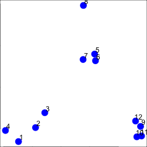
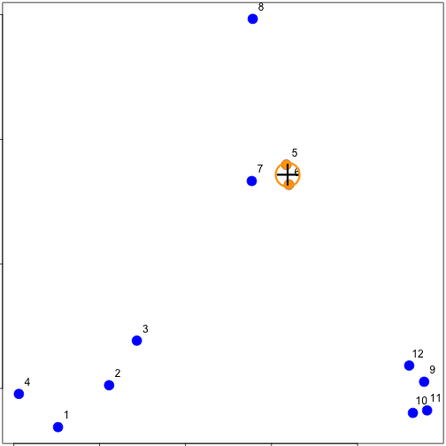
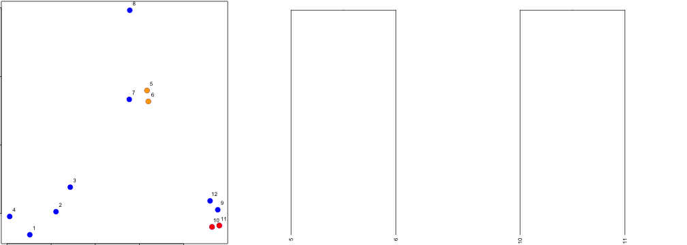
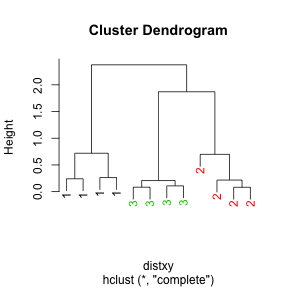
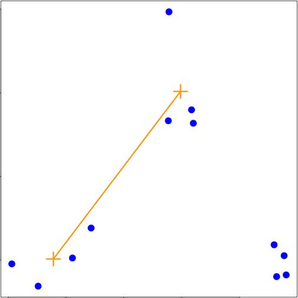
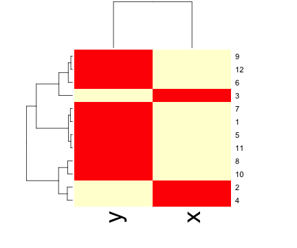

Clustering organizes things that are close into groups
- How do we define close?
- How do we group things?
- How do we visualize the grouping?
- How do we interpret the grouping?
Roger D. Peng, Associate Professor of Biostatistics
Johns Hopkins Bloomberg School of Public Health
Clustering organizes things that are close into groups

http://scholar.google.com/scholar?hl=en&q=cluster+analysis&btnG=&as_sdt=1%2C21&as_sdtp=


In general:
\[\sqrt{(A_1-A_2)^2 + (B_1-B_2)^2 + \ldots + (Z_1-Z_2)^2}\] http://rafalab.jhsph.edu/688/lec/lecture5-clustering.pdf

In general:
\[|A_1-A_2| + |B_1-B_2| + \ldots + |Z_1-Z_2|\]
set.seed(1234)
par(mar = c(0, 0, 0, 0))
x <- rnorm(12, mean = rep(1:3, each = 4), sd = 0.2)
y <- rnorm(12, mean = rep(c(1, 2, 1), each = 4), sd = 0.2)
plot(x, y, col = "blue", pch = 19, cex = 2)
text(x + 0.05, y + 0.05, labels = as.character(1:12))

distdataFrame <- data.frame(x = x, y = y)
dist(dataFrame)
## 1 2 3 4 5 6 7 8 9
## 2 0.34121
## 3 0.57494 0.24103
## 4 0.26382 0.52579 0.71862
## 5 1.69425 1.35818 1.11953 1.80667
## 6 1.65813 1.31960 1.08339 1.78081 0.08150
## 7 1.49823 1.16621 0.92569 1.60132 0.21110 0.21667
## 8 1.99149 1.69093 1.45649 2.02849 0.61704 0.69792 0.65063
## 9 2.13630 1.83168 1.67836 2.35676 1.18350 1.11500 1.28583 1.76461
## 10 2.06420 1.76999 1.63110 2.29239 1.23848 1.16550 1.32063 1.83518 0.14090
## 11 2.14702 1.85183 1.71074 2.37462 1.28154 1.21077 1.37370 1.86999 0.11624
## 12 2.05664 1.74663 1.58659 2.27232 1.07701 1.00777 1.17740 1.66224 0.10849
## 10 11
## 2
## 3
## 4
## 5
## 6
## 7
## 8
## 9
## 10
## 11 0.08318
## 12 0.19129 0.20803



dataFrame <- data.frame(x = x, y = y)
distxy <- dist(dataFrame)
hClustering <- hclust(distxy)
plot(hClustering)
myplclust <- function(hclust, lab = hclust$labels, lab.col = rep(1, length(hclust$labels)),
hang = 0.1, ...) {
## modifiction of plclust for plotting hclust objects *in colour*! Copyright
## Eva KF Chan 2009 Arguments: hclust: hclust object lab: a character vector
## of labels of the leaves of the tree lab.col: colour for the labels;
## NA=default device foreground colour hang: as in hclust & plclust Side
## effect: A display of hierarchical cluster with coloured leaf labels.
y <- rep(hclust$height, 2)
x <- as.numeric(hclust$merge)
y <- y[which(x < 0)]
x <- x[which(x < 0)]
x <- abs(x)
y <- y[order(x)]
x <- x[order(x)]
plot(hclust, labels = FALSE, hang = hang, ...)
text(x = x, y = y[hclust$order] - (max(hclust$height) * hang), labels = lab[hclust$order],
col = lab.col[hclust$order], srt = 90, adj = c(1, 0.5), xpd = NA, ...)
}
dataFrame <- data.frame(x = x, y = y)
distxy <- dist(dataFrame)
hClustering <- hclust(distxy)
myplclust(hClustering, lab = rep(1:3, each = 4), lab.col = rep(1:3, each = 4))




heatmap()dataFrame <- data.frame(x = x, y = y)
set.seed(143)
dataMatrix <- as.matrix(dataFrame)[sample(1:12), ]
heatmap(dataMatrix)
